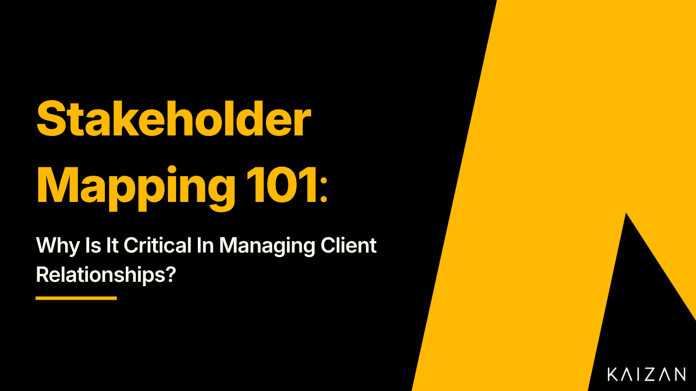

Stakeholder Mapping 101:Why Is It Critical In Managing Client Relationships?

Successful client management relies on understanding your clients, identifying their needs and understanding how best to engage with them. Stakeholder mapping is a crucial tool within this process, and when done effectively it can help businesses to create successful relationships with their clients that prosper and scale.
In this article, we’ll look at:
What stakeholder mapping is.
Why stakeholder mapping is important.
How to do stakeholder mapping.
What is Stakeholder Mapping?
Stakeholder mapping is a process used by businesses to manage their client relationships successfully. It involves identifying and analysing individuals, groups, and organisations that can impact or be impacted by a project, program, or business.
The mapping exercise provides a stakeholder analysis of the key players, their identities, interests, and objectives. It can be used to develop strategies, inform decision-making, and manage key relationships.
Clients are important stakeholders for any business, so a stakeholder mapping exercise can be very useful for client success managers and their teams. By carrying out a stakeholder analysis, key messages can be developed and refined, potential problem areas identified, and key projects on clients prioritised.
The process of stakeholder mapping includes:
Identifying key stakeholders.
Assessing their interests and objectives.
Determining their level of influence.
Developing a strategy for engagement.
This gives you an understanding not only of who your stakeholders are but how they can affect you and what you should do about it. We go into more detail on these and other steps below.
For client service and success teams, this means identifying clients or groups of clients, mapping out their interests and impacts, developing ways to better manage client journeys, gaining wider stakeholder coverage within a business and so improving client relationships.
Why is Stakeholder Mapping Important?
Stakeholder mapping is critical in managing client relationships as it helps businesses build trust, establish open communication channels, and ensure the success of their projects or businesses. Without stakeholder mapping, businesses may fail to understand their client’s needs and expectations, leading to negative impacts on their projects or businesses.
Stakeholder mapping also helps businesses to understand what impact different clients can have on their organisation. Which are influential players in their industry who could bring other clients? Which ones have a strong public presence that can generate positive publicity? Which ones generate the highest revenue and have the largest impact on the business overall?
By mapping clients and key stakeholders businesses can develop effective client management strategies.
How is Stakeholder Mapping Done?
There is no one best way to do stakeholder mapping, as different techniques suit different teams. That said, it’s possible to set out the broad steps, which are the same no matter your approach.
The most common methods make use of a stakeholder mapping grid or matrix. Stakeholders are placed on a two-dimensional grid, sorted by their level of influence on one axis and support or interest on the other. This sorts them into groups that are easy to prioritise and to assign different actions to.
Here’s a step-by-step guide to creating a stakeholder map:
1. Define Your Stakeholders
The first step is to identify who your stakeholders are. This step involves conducting thorough research to determine all the parties that may have an interest in your project or business.
Examples of stakeholders include:
A client team’s approach to stakeholder mapping will be different from that of a project. Instead of examining a wide spread of interested parties, you would focus on clients. You can extract a list directly from your CRM or client engagement software like Kaizan.
2. Identify Your Stakeholders’ Interests
Once you’ve identified your stakeholders, you need to identify their interests. What are they hoping to get out of the work that you’re doing? When doing this for clients, a lot of the information will come from focusing on one area: what do they get out of using your products and/or services? Focussing on the benefits clients get from your products and services are key. What are they using them for? Why are these tools useful? What role do you play in the clients’ own businesses?
Take time to think about what else your clients get from working with you and their other interests. Are you a key strategic partner? Are they keen on environmental and social projects? Do they have big ambitions to expand in a field related to your industry?
3. Categorise Your Stakeholders
Once you’ve identified your stakeholders and their interests, you need to categorise them.
One common method for categorising stakeholders is to use the MEDDIC sales qualification process. This is a framework used by businesses to categorise prospects and potential customers. Let’s explore each category in more detail:
Metrics Questions — Metrics are the quantifiable measures of the value that your product or service provides to your customers. They clearly demonstrate the value of your solution in a simple and easy-to-understand manner.
Economic Buyer— The person who is the overall decision maker; they have the knowledge, perspective, and energy to commit to a meaningful purchase.
Decision Process — A decision process will include the person who makes a decision, the potential customer’s timeline, and any formal approval processes.
Decision Criteria — This is the criteria on which a purchase decision is made. This usually falls into three categories: 1. Technical Criteria— Does your solution have the technical capability to do what the customer needs?2. Economic Criteria — Does your solution deliver the expected ROI? 3. Relationship Criteria— Have you created a collaborative partnership with the customer?
Identify Pain— The potential customer must have evident business pain before pursuing a solution, and it’s vital to understand these pain points and then identify how your solution can relieve it.
Champion— Champions are respected stakeholders within your customers’ business who meet very distinct criteria: 1. They have Power and Influence 2. They are selling internally for you 3. They have a vested interest in your success
If you’re looking at clients rather than a project, then categorisation is likely to work differently. They are all directly affected by your work, just to different extents. You might categorise them using another division, depending on what is most appropriate for your business:
By the products and services they use.
A Tiering system based on commercial value or revenue.
Contract term or status (Active, One-off, Repeat, Lapsed).
Industry or Geographical Location.
Any of these approaches can be useful as a stakeholder mapping framework. What matters is to divide them on criteria that are meaningful for you and will be useful in deciding how to work with them.
4. Identify Your Stakeholders’ Level of Influence
Once you’ve categorised your stakeholders, you need to identify their level of influence. This will help you determine how much weight to give their interests when making decisions.
There are a few different ways to measure influence, but one common method is to use a scale of 1 to 5, with 1 being the least influential and 5 being the most influential. How you place stakeholders on this scale will depend upon factors such as their public profile, their financial power, and their degree of influence within your business.
For clients, where you put them on the scale will depend upon factors such as:
how much revenue they represent;
how long they’ve been a client;
how long-term their contract is;
the size of their business and therefore their potential for further investment;
whether they have significant connections within your company.
Think about where clients’ influence comes from and how substantial it actually is. Have you given a lot of weight to a specific company in hopes that they would become a key client with high revenues, but this hasn’t materialised? Then maybe it’s time to accept that they’re not an important client for your company and let that influence go.
5. Create Your Stakeholder Map
Once you’ve identified your stakeholders, their interests, and their levels of influence and interest, you’re ready to create your stakeholder map. The most common method for doing this, as discussed earlier, is to use a matrix. Simply create a grid with your stakeholders’ influence on one axis and their support or interest on the other axis. Then plot the stakeholders against these two axes.
This will naturally produce clusters of stakeholders with a similar significance. For example, high-value clients who are very influential and very interested in your products might be plotted in the top-right quadrant, while clients who provide low revenue end up in a low-influence, low-interest bottom-left quadrant.
Plotting on two different criteria is important, as it gives more nuance than trying to categorise clients on a single scale from least to most important. For example, a small client will relate to you differently if they actively rely on your products rather than if your business is just viewed as one more expense. A small, reliant business and a larger client that only uses you occasionally might both seem to have medium importance, but benefit from very different handling as clients, need different things from you as a company, and offer different opportunities.
6. Develop Your Stakeholder Management Strategy
Having used stakeholder mapping as an analysis tool, the next step is to reap the benefits of that analysis by developing a stakeholder management strategy. This will ensure that you’re engaging with the right people, at the right time, in the right way.
Look at the distribution of stakeholders in your mapping exercise. There should be clusters of stakeholders who are in similar positions relative to your work, even if those clusters are just the four quarters of a simple grid. Some clusters will clearly be higher priorities than others. For example, a group of high influence, high-interest clients are all stakeholders it’s worth investing a lot of time and effort into, while those with little interest in your products should be treated as low priorities. Consider what you can get out of each group, what their shared needs are, and how you can approach them.
Based on this, create a stakeholder management plan. This is a document that outlines how you will engage with each stakeholder, based on their level of influence and support or interest. For example, your approach to high-influence, low-interest clients might be to spend more time showing them the benefits of your products, to cross-sell new products and move them to a higher level of interest.
On a project, you might decide to meet with your most influential stakeholders on a regular basis, send them updates about the project, and involve them in decision-making, while limiting less influential stakeholders to occasional updates and only involving them in decision-making when necessary. In a client success team, you might implement policies of regular contact with high-value clients to keep them engaged, while putting some effort into helping low-influence but high-interest clients to understand the value in using your products or service and responding as appropriate to the low-interest, low-influence group.
Don’t be too rigid in your approach. There will be variations within clusters of clients, depending upon the individual clients and their value to you. Use the stakeholder mapping chart to work out who the high priorities are and to provide a starting place for client development plans.
A stakeholder or client management plan helps you engage with your stakeholders in the most effective way possible. It forces you to consider them relative to one another and saves you from reinventing the wheel for each new client.
7. Implement Your Stakeholder Management Strategy
Once you’ve developed your stakeholder or client management strategy, you need to implement it. This will help you ensure that you’re consistently engaging with your stakeholders in the right way.
A common approach to this, and one that’s ideally suited to client success teams, is to create a communication plan. This is a document that outlines how you will communicate with different types of stakeholders, what information you will share, and how often you will share it. This might include training materials, messages about new services, checking in to see how they’re getting on with your products, consultations on future developments, even reminders about product renewals. Remember, the work you put in for each client should be proportionate to how important they are to you, as measured by their interest and influence.
Creating a communication plan can help you ensure that you’re consistently communicating with your clients and that they have the information they need to make informed decisions about your products. Reminders and automated messages can be built into your client management system, to ensure that the plan runs smoothly and reduce the workload for the team.
Like any plan, it shouldn’t become a shackle that stops you adapting to circumstances, but a set of guidelines to encourage consistency and save on future planning.
8. Monitor Your Stakeholder Relationships
Once you’ve implemented your stakeholder management strategy, you need to monitor your stakeholder relationships. Client Engagement platforms, such as Kaizan, can provide valuable insights on stakeholder coverage, engagement time, sentiment analysis and date of last contact based on communication data collected from emails and calls with clients. This data is valuable in understanding the depth of key stakeholder relationships and how you might need to improve them.
You can also create a feedback loop to collect feedback from your stakeholders on a regular basis and use it to improve your stakeholder management strategy. Set regular time aside to assess feedback from clients or other stakeholders and see what it tells you about the effectiveness of your strategy. Are there important communications that are missing or misguided?
Be ready to re-examine the stakeholder map. For a client success team, clients can and should move from one part of the grid to another as you get them invested in your company’s products and services.
Creating a feedback loop can help you ensure that your stakeholder management strategy is effective and that your project or client management is on track.
Making the Most of Mapping
Stakeholder mapping is a critical process that businesses should undertake to manage their client relationships successfully. By identifying and analysing key stakeholders, businesses can tailor their services and products to meet their clients’ needs, mitigate potential risks, and ensure the success of their projects or businesses.